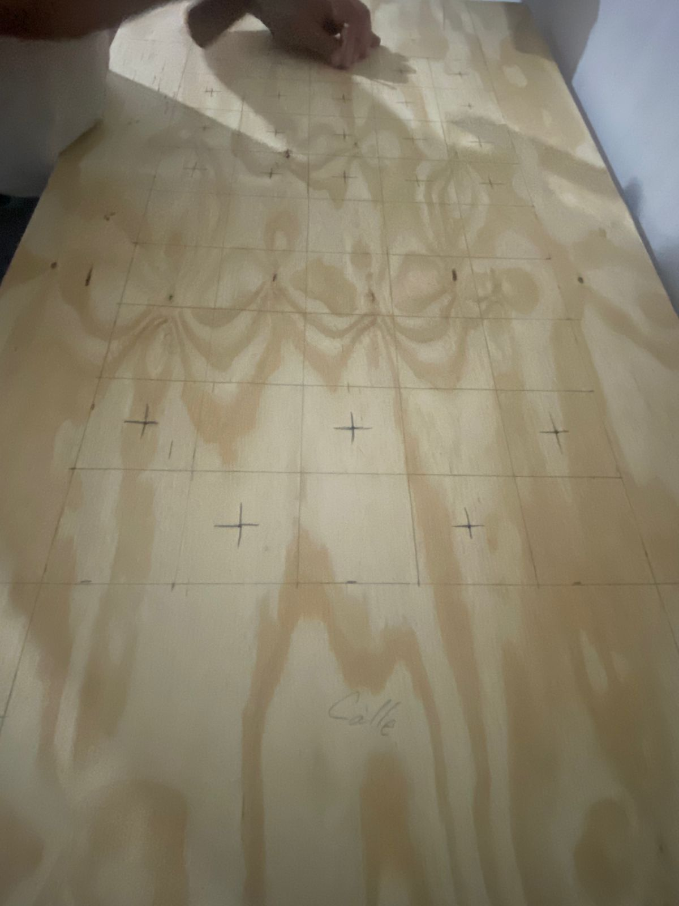
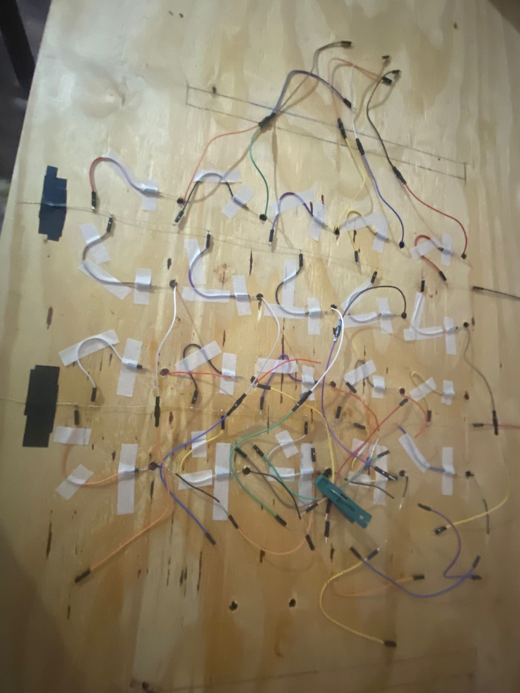
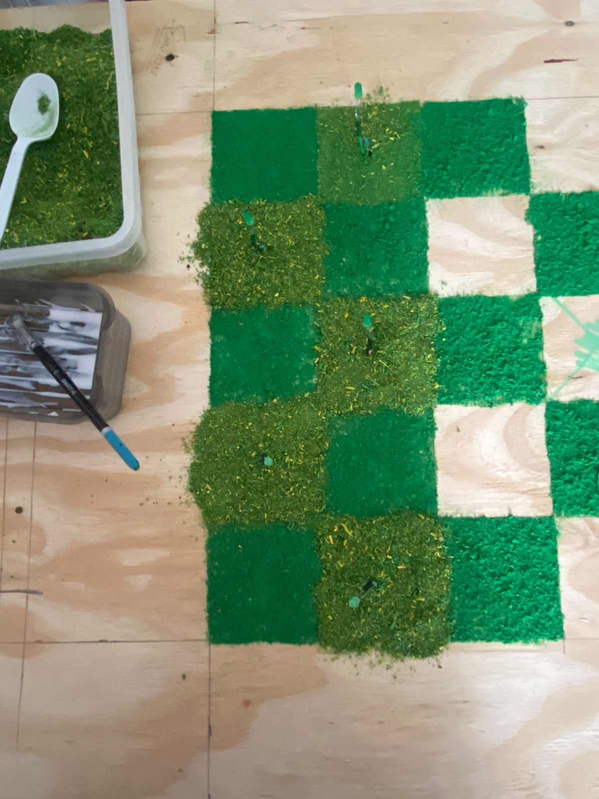
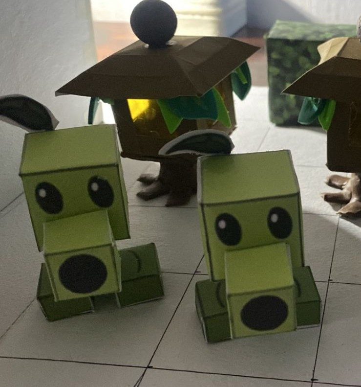

🎮 Descripción del Proyecto
Este proyecto representa una maqueta interactiva del icónico videojuego Plants vs Zombies, desarrollada con tecnología Arduino. La maqueta recrea fielmente el campo de batalla del juego, incorporando iluminación LED controlada por fotoresistencias (LDR), que simula el ciclo día-noche característico del juego original de PopCap.
🎬 Resultado Final - Gameplay
Observa la maqueta completa en funcionamiento, mostrando todos los efectos de iluminación y el sistema de control automático con fotoresistencias.
🔨 Proceso de Elaboración
La construcción de esta maqueta involucró múltiples etapas, desde el diseño inicial hasta el ensamblaje final con todos los componentes electrónicos. A continuación se muestra el proceso completo paso a paso:
- Paso 1 - Diseño y Planificación: Boceto inicial del campo de batalla con ubicación de LEDs y componentes
- Paso 2 - Construcción de la Base: Elaboración de la estructura de madera con dimensiones del tablero del juego
- Paso 3 - Creación de Personajes: Diseño y construcción de plantas y zombis en materiales diversos
- Paso 4 - Sistema Eléctrico: Instalación de LEDs, resistencias y fotoresistencias
- Paso 5 - Programación Arduino: Código para control automático de iluminación según luz ambiental
- Paso 6 - Decoración y Detalles: Pintura, pasto sintético, casa y zombis con efectos especiales
📸 Galería del Proceso






💡 Práctica de Control de LEDs con Fotoresistencia
El sistema de control automático utiliza fotoresistencias (LDR) para detectar los niveles de luz ambiental. Cuando la fotoresistencia detecta oscuridad (nivel bajo de luz), el Arduino activa automáticamente todos los LEDs de la maqueta, simulando el modo nocturno del juego.
⚙️ Funcionamiento del Sistema:
- Fotoresistencia LDR: Sensor que varía su resistencia según la cantidad de luz que recibe
- Entrada Analógica: Arduino lee el valor de la fotoresistencia (0-1023)
- Umbral de Activación: Si el valor es menor al umbral programado, se considera "noche"
- Control de LEDs: En modo nocturno, todos los LEDs se encienden automáticamente
- Efecto Dinámico: Los LEDs RGB cambian de color simulando diferentes estados del juego
Esta implementación demuestra el concepto de entrada analógica y salida digital en Arduino, una de las aplicaciones fundamentales en proyectos de automatización e IoT. El sistema responde en tiempo real a los cambios de iluminación del ambiente, creando una experiencia interactiva y autónoma.